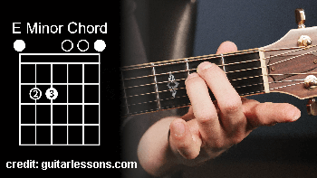

מאחורי הצלילים > מהו אקורד?
סביר להניח שמתישהו בחיים - כבר נתקלתם במונח אקורד.
אקורד(או בשמו העברי תַּצְלִיל)
הוא צירוף של שלושה צלילים(או יותר) המנוגנים בעת ובעונה אחת.
דוגמא לתצוגת אקורדים:

להלן דוגמא של אקורדים לשיר "היינו עושים אהבה" - כנסיית השכל. כפי שניתן לראות, מעל המילים מופיעות אותיות מסוימות כגון
AM, EM, C, F
וכו'..
אלו הם האקורדים של השיר.
האקורדים הם בעצם הליווי של השיר. אין זה משנה אם ננגן אקורדים אלה על קלידים או גיטרה לצורך העניין. כל עוד ננגן את האקורד הנכון בזמן הנכון לפי הכתוב לעיל, נוכל ללוות את השיר בטון הנכון ולשיר בו זמנית - והכל ישמע לנו "מתאים" באוזן.
אז מהו בעצם הAM הזה?
AM, EM, F וכו' הם שמות האקורדים.
כל אקורד, הוא שילוב של שלושה תווים בו זמנית. למשל האקורד AM, מכיל את התווים: לה,דו,מי.
ברמת העיקרון, כדי לנגן על כלי נגינה מסוים(גיטרה או קלידים) אין שום צורך לזכור מהם התווים שמרכיבים כל אקורד ואקורד, אלא אך ורק לזכור את "האצבוע" הנכון על כלי הנגינה המסוים.
אם זו גיטרה, צריך לזכור היכן ללחוץ עם 3 אצבעות על צוואר הגיטרה ולזכור שזהו האקורד.
האקורד EM למשל מכיל את שלושת התווים: מי, סול, סי.
כיצד אדע מאיזה תווים מורכב כל אקורד?
זוהי תורה מוזיקלית(ומתמטית) שלמה בפני עצמה. מי שמעוניין לדעת את התיאוריה מאחורי התווים ברמה הגבוהה ביותר, מוזמן להרחיב על הנושא ולקרוא את הערך
אקורד בויקפדיה ולהתקדם משם.
ההמלצה שלי עבור כל מי שמעוניין להתחיל לנגן שירים בצורה חובבנית(מבלי להתעמק בתיאוריה עצמה) -
כל שהוא צריך לעשות זה לזכור את ה-אִצְבּוּעַ הנכון עבור כל אקורד ואקורד על כלי הנגינה בו הוא מעוניין לנגן.
במילים אחרות, אם אני מעוניין לנגן בגיטרה, עלי לזכור שהאִצְבּוּעַ של האקורד EM למשל בגיטרה הוא בצורה הבאה:

בתמונה זו נוכל לראות כיצד נראית תבנית של אקורד מסוים בגיטרה, וכיצד היא מתורגמת בצורה פיסית לאִצְבּוּעַ על הגיטרה עצמה.
אם ברצונכם ללמוד כיצד לעשות זאת בעצמכם, תוכלו לגשת בתפריט העליון ל"לימוד נגינה".
התכנסנו כאן לשם התיאוריה
אך אם בכל זאת אתם מסוקרנים, כיצד ידעתי שהאקורד AM מורכב מהתווים לה,דו,מי אספר לכם בקצרה על התיאוריה שעומדת מאחורי הרכבת האקורדים.
במאמר זה נדבר על אקורדים משולשים בלבד(המכילים 3 צלילים בלבד).
לכל תו מבין 12 התווים, קיימים ארבעה אקורדים. אנו נתמקד בשני האקורדים השכיחים ביותר: המז'ורי והמינורי.
ניקח למשל את התו C(דו)
ונרצה לדעת ממה מורכב האקורד C.
תחילה, נבין האם C זהו אקורד מינורי או מז'ורי.
כל אקורד מז'ורי מיוצג על ידי התו שלו בלבד, ללא כל תוספת. לכן האקורד C זהו אקורד מז'ורי.
האקורד CM לעומת זאת, זהו אקורד מינורי(ה-M מייצגת Minor).
נרצה להבין מהם התווים המרכיבים את האקורד C(מז'ור).
כדי לעשות זאת, נצטרך לדעת מהו הסולם(הסבר על סולמות בהמשך) של דו(C) מז'ור.
לצורך ההסבר, אגיד לכם מראש שהסולם דו מז'ור הינו הסולם שכולנו מכירים:
דו(C), רה(D), מי(E), פה(F), סול(G), לה(A), סי(B)
לאחר שאנו יודעים את הסולם, כל שנצטרך להרכיב את האקורד הוא לקחת את הדרגה הראשונה(C) הדרגה השלישית(E) והדרגה החמישית(G). ונראה שקיבלנו את התווים C,E,G
הלא הם התווים דו,מי,סול שאכן מרכיבים את האקורד C(מז'ור).
דוגמא נוספת: ננסה למצוא את התווים של האקורד AM.
AM זהו אקורד מינורי(M מסמל Minor).
אם נקרא לאקורד בעברית, הוא יכונה לה(A) מינור(M).
כדי למצוא את מרכיבי האקורד, נצטרך תחילה לכתוב את סולם לה מינור(הסבר על מציאת סולמות בהמשך).
סולם לה מינור:
לה(A), סי(B), דו(C), רה(D), מי(E), פה(F), סול(G)
כעת, ניקח את הדרגה הראשונה(A) הדרגה השניה(C) והדרגה החמישית(E).
נראה כי קיבלנו את התווים A,C,E הלא הם לה,דו,מי שאכן מרכיבים את האקורד AM.
כלי הנגינה - הוא רק הכלי
כשפירקנו את האקורד AM לתווים המרכיבים אותו: לה,דו,מי - ראינו שאין קשר בין התיאוריה שמאחורי האקורד לבין כלי הנגינה עליו אנו מנגנים.
אותו אקורד AM יורכב תמיד מהתווים לה,דו,מי.
כלי הנגינה, הוא רק הדרך שלנו ללחוץ את צירוף התווים הזה ולהפיק את הצליל ההרמוני שיכיל את התווים לה,דו,מי. נוכל לעשות זאת על ידי האצבוע הנכון בגיטרה, בקלידים או אפילו בחצוצרה.
לכן, לאחר שהתיאוריה נלמדת ומופנמת, ולאחר שתכירו את התווים המרכיבים את כל האקורדים - תוכלו ברמת התיאוריה לנגן על כל כלי נגינה בו תחפצו. יהיה לכם את הידע לעשות זאת, כל שיישאר לכם לעשות הוא להתאמן על המיומנות והטכניקה עבור כלי הנגינה שתבחרו...